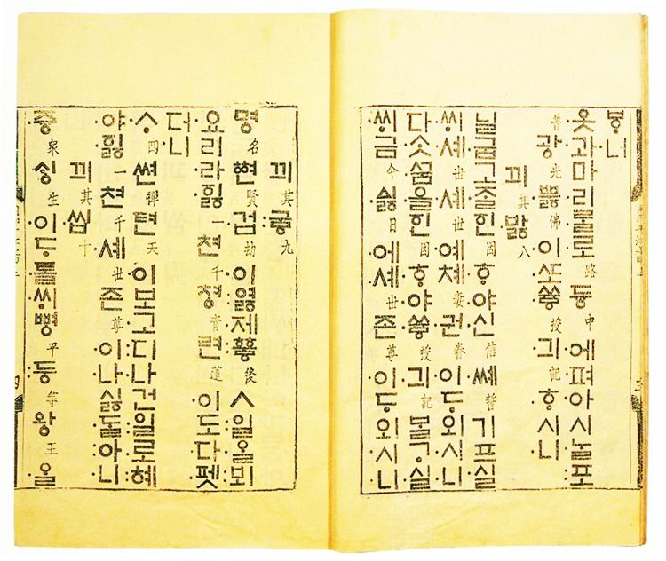

-첫째<중세국어(중세한국어)에 대하여>
-중세국어의 유래
중세국어는 그 말대로 중세에 쓰였던 한국어의 고어(古語)로
국내에서는 중세국어라고도 불린다.
사용한 시기로는 10세기에서 16세기의 가설이 유력하다.
다만 훈민정음, 곧 한글 창제로써 15세기 이후의 중세국어는 분명한 모습을 보여주고,
또 음운체계에서 새로운 변화가 일어난 것으로 믿어지기 때문에 14세기 이전과 15세기 이후를 구별하여
전기 중세국어와 후기 중세국어로 나누는 것은 가능하다.

대한민국 국보 제320호, <월인천강지곡 권상>
-둘째<음운과 자음, 모음>
-음운 체계 변화
당시의 음운으로 현대 한국어의 음운 체계를 변화하고 있는 것과
그렇지 않는 것으로 나타납니다.
대표적으로 이전까지 독립된 음운으로 기능하지 못했던 된소리 계열이 등장한 것과
지금과는 다른 몇 가지 자음이 보인다는 것입니다.
-음운 성조의 사용
중세 국어 시기에는 성조가 운소로서 기능하였다.
훈민정음에서는 성조를 방점으로 표기하였고 방점은 글자 왼편에 위치하였다.
예시)어엿 ּּ비너 ּּ겨ּּּ (어여삐 여겨/현대어 뜻으로는 불쌍히 여겨)
-자음
중세국어에는 ㅎ탈락처럼 ㄱ탈락현상이 있었고
어두에 여러 자음을 함께 표기한 어두자음군 표기가 나타나는데,
크게 ㅅ계, ㅂ계 ㅄ계로 나눌 수 있다.
말 사이에서 /j/와 /j/, 또는 /j/와 /i/가 잇따를 때 생기는 긴장된 협착을
나타내기 위해 ㆀ이라는 표기가 있었다.
하향이중모음을 가진 일부 피·사동 어간에만 쓰였다.
-모음
모음조화가 엄격하게 지켜졌다.
'ㆍ'의 소릿값은 그 이름인 아래'아'와 달리 ㅏ보다는 현재의 ㅓ와 가깝다.
또한 아래아라는 이름은 나중에 지어졌다는 것을 알아야 한다. 원순모음화가 일어날 때 ㅡ는 ㅜ로 변하는데,
ㆍ는 ㅗ로 변화하는 것을 통해 ㆍ와 ㅗ가 원순성 유무로 대립하고 있었던 것을 알 수 있다.
-셋째<문법>
기본적인 문법은 현대 한국어와 크게 다르지 않다. 하지만 자세히 들어가면 작은 차이점이 나타난다.
-1.중세국어는 주격조사'가'가 없다.
중세국어의 '이'는 현대국어처럼 주어가 자음으로 끝날 때 사용되었으며
'ㅣ'(딴이)는 주어가 'ㅣ' 외의 모음으로 끝날 때 사용되었다.
현대국어에서는 이 경우에 '가'의 형태를 쓴다.
-2.어미교체.
-<'ㄷ'으로 시작하는 어미가 서술격조사 '이-', 추측법 선어말어미 '-리-', 회상법 선어말어미 '-더-'
인칭활용 선어말어미 '-오-' 뒤에서 'ㄹ'로 바뀐다.>
-<서술격조사 '이-' 뒤에서 어미들이 특이하게 바뀐다.>
-<명사형 전성어미 '-옴/움', 연결어미 '-오ᄃᆡ/우ᄃᆡ, '-우려/오려'와 같이
일부 어미는 선어말어미 '-오-/-우-'와 합쳐져 한 형태소를 이루기도 한다.>
-<타동사인지 아닌지에 따라 확인법 선어말어미가 다르다.>
-3.형태에 따른 품사 구분.
명사파생 접미사는 '-ᄋᆞᆷ/-음'인데, 명사형 전성어미는 '-옴/-움'이다.
수량을 나타내는 명사 '걸음'은 거름으로
동명사형 '걸음'은 거룸으로 나타나 있어 현대 국어와 다르게 형태적으로 구분할 수 있다.
-4.형용사와 동사의 구분.
현대국어에 비해 형용사와 동사 간의 구분이 불분명했다. 'ᄆᆞᆰ다'(>맑다), '멀다', '검다' 등
대다수의 형용사는 '맑아지다', '멀어지다', '검어지다' 등 상태변화의 동사로 사용될 수 있었다.
-5.관형법.
관형절과 명사절의 의미상 주어가 주격이 아닌 관형격 표지 'ᄋᆡ/의'를 취한다.
이것을 '주어적 속격'이라고 부른다.
관형사형 전성어미 '-ㄴ, -ㄹ'이 명사적으로 쓰이기도 한다.
고대국어에서는 아예 '-ㄴ, -ㄹ, -ㅁ'이 명사적 기능과 관형사적 기능을 동시에 가졌다.
-넷째<높임법>
-객체높임법은 목적어 명사나 부사어 명사가 주어와 화자보다 높을 때 실현되는 문법적 절차이다.
객체높임 선어말어미가 동사의 활용형에 나타난다.
객체높임 선어말어미는 음운론적 환경에 따라 모습이 달라지는 점을 주의하자.

-상대높임법.
상대높임법은 화자가 청자를 높이거나 낮추는 높임법으로
ᄒᆞ라체(아주낮춤), ᄒᆞ야쎠체(예사높임이나 예사낮춤), ᄒᆞ쇼셔체(아주높임)
으로 3등급 체계로 이루어져 있다.
-선어말어미'-오-/-우-'.
1인칭 주어가 오면 그 서술어에 '-오-/-우-'가 붙는다.
이것을 '인칭활용' 또는'화자 표시법'이라고 한다.
하지만 문장의 주어가 화자와 일치하거나 포함하는 경우에도 출현한다.
-끝<중세국어>